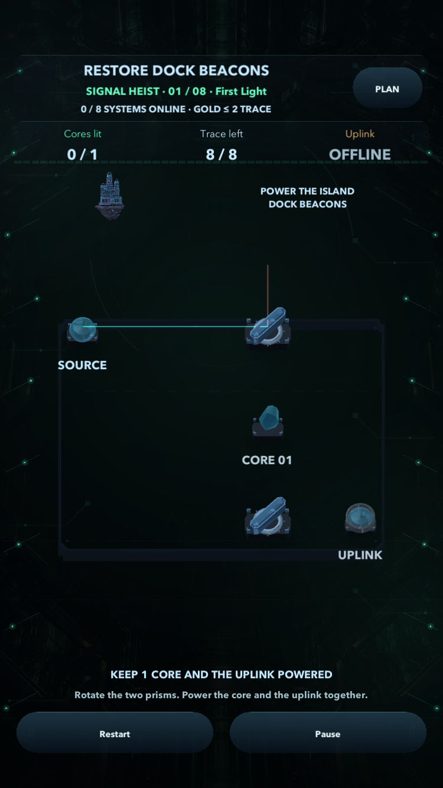
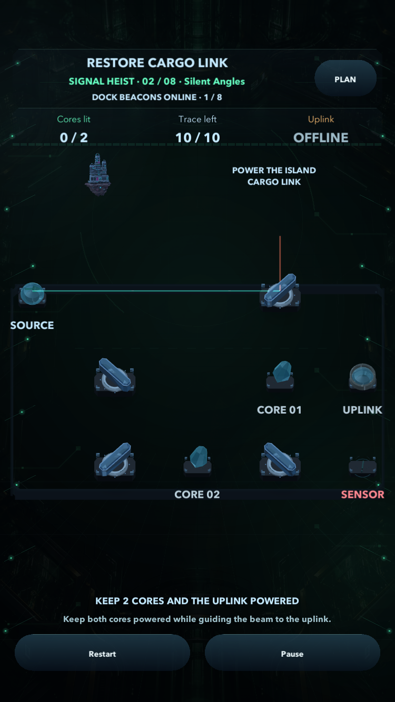
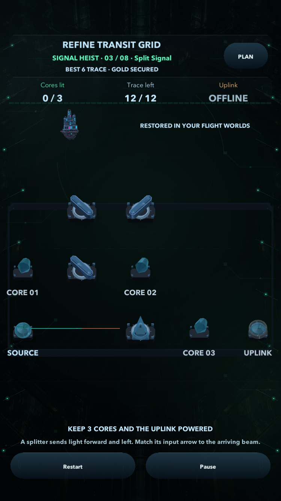
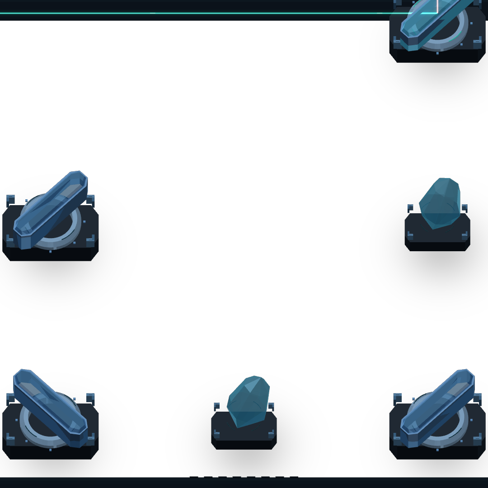
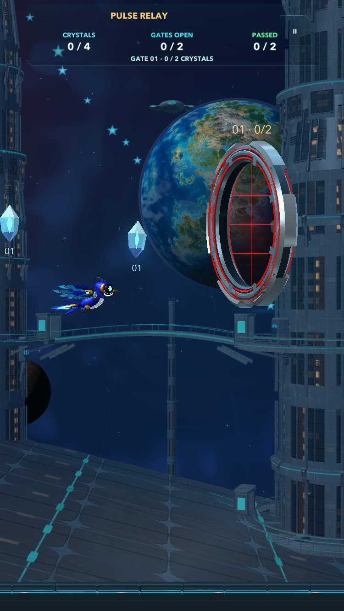
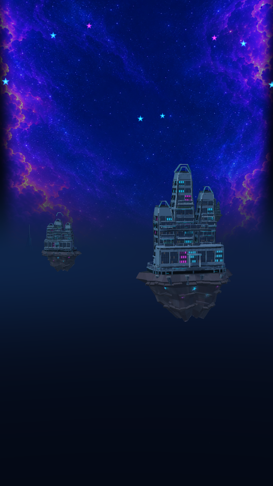
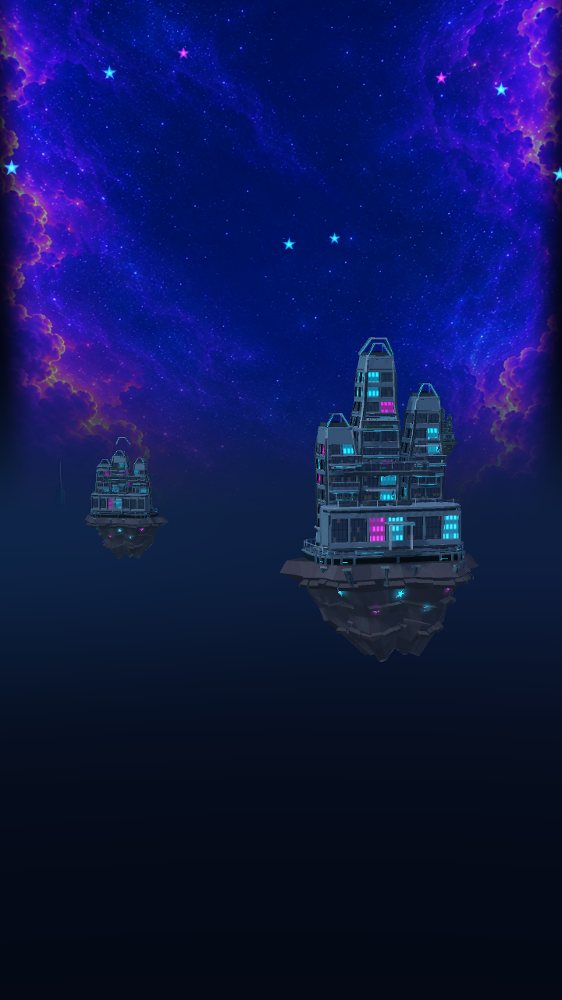
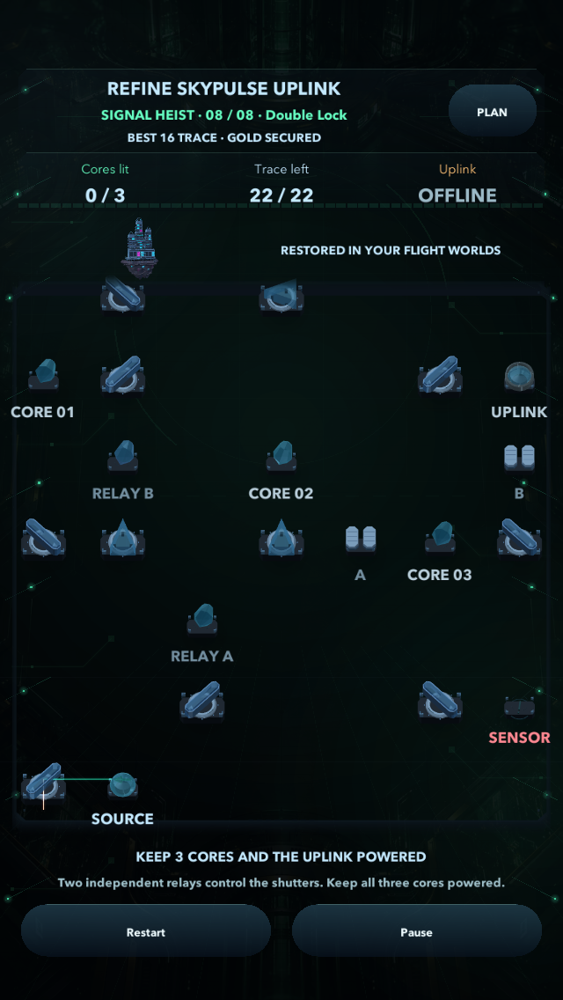
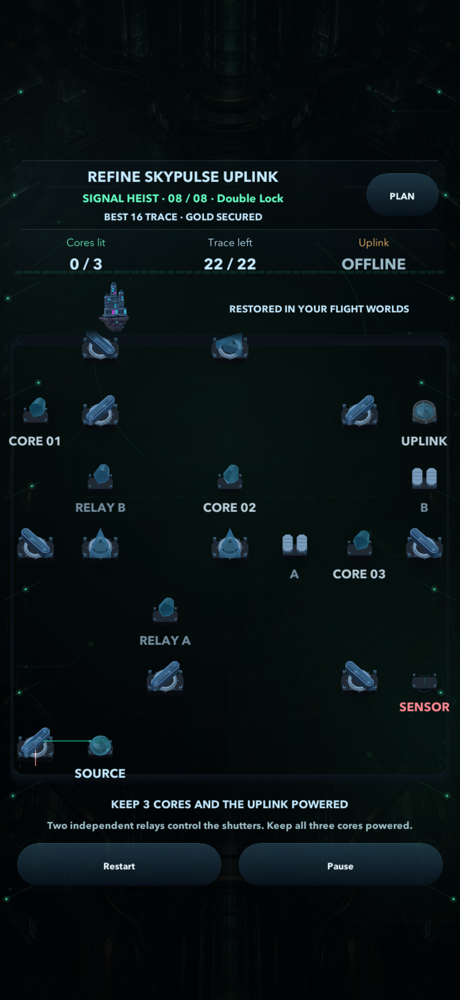
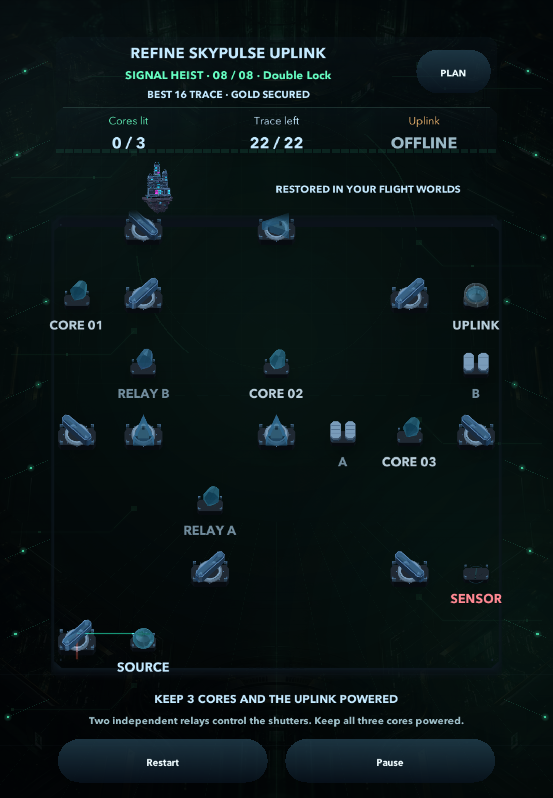

Implemented Unity source: World Restoration and Titanium Skyport. Actual Unity Editor renders; installed iPhone Build 21 and public review stay unchanged. Implementation and limits · QA record
Real prism rotations and beam flow, rendered at fixed simulation steps. This is not measured phone performance.









